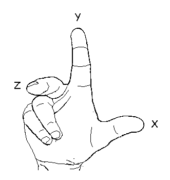
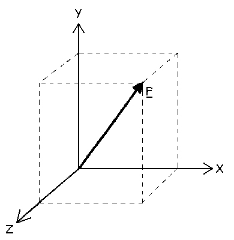

3-D Forces and Kinematics
Until now, we have only considered human motion to occur in two dimensions (the X-Y plane). Although unrealistic in a general sense, many human movements can be simplified to two dimensions and it was easier to introduce the concepts of mechanics without the further complication of the third dimension. We now consider human motion in space and introduce the third (Z) direction. The first thing to consider is the axis or coordinate system in three dimensions.
Right Hand Axis System:
Using your right hand, orient your thumb, pointer and middle fingers such that each is at 90 degrees to the others. Your thumb is considered to be pointing in the direction of the positive X axis, your pointer finger indicates the direction of the positive Y axis and your middle finger is pointed toward the positive Z axis. The advantage of this is that the axis system can be either rotated or viewed from different perspectives and we can always find the directions. This will be seen to be particularly useful when we consider rotations and moments of force.
Rectangular components:
Any vector or rigid body has three components of magnitude or length and we need three angles to describe the direction or orientation. Consider the force vector F shown to the right. The magnitude has X, Y, and Z components and three direction cosines. The direction cosines indicate the number of degrees that F must be rotated to reach the positive axis.
Click here to see the rectangular components of F.